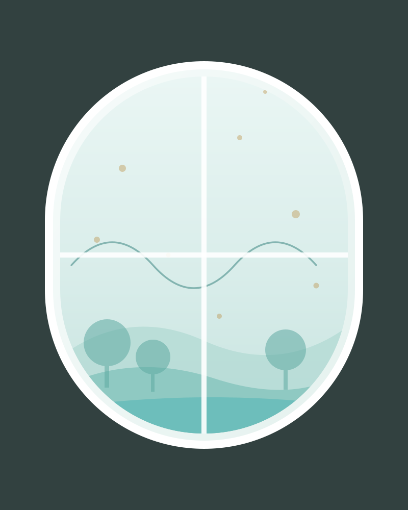

Zeytin poleni immünoterapisi
Ulusal Alerji ve Klinik İmmünoloji Kongresi — bildiri birincilik ödülü.
Yetişkin Alerji ve Astım Uzmanı · İstanbul
Alerjinizi bastırmayın; kaynağını bulalım, birlikte çözelim. Yıllarca “bahar nezlesi” denip geçilen şikayetlerin ardında çoğu zaman teşhis edilebilir bir alerji vardır.
25+ yıl hekimlik EAACI üyesi Aynı gün geri dönüş

Nereden başlamalı?
Tıbbi adını bilmenize gerek yok. Kendi cümlenizi seçin, doğru sayfaya birlikte gidelim.
“Burnum sürekli akıyor, tıkanıyor.”
Alerjik Rinit · hapşırık, geniz akıntısı
“Geceleri öksürüyorum, göğsümde hırıltı var.”
Astım · nefes darlığı, gece öksürüğü
“Cildim kaşınıyor, kurdeşen döküyorum.”
Ürtiker & Egzama · kabarıklık, kaşıntı
“Bazı yiyecekler bana dokunuyor.”
Besin Alerjisi · döküntü, şişme, mide şikayeti
“İlaç kullanınca reaksiyon oldu.”
İlaç Alerjisi · döküntü, şişlik
“Arı soktu, çok kötü geçirdim.”
Arı Alerjisi · yaygın reaksiyon riski
“Şişliklerim kaşıntısız, ilaçlar geçirmiyor.”
Herediter Anjiyoödem · tekrarlayan ödem atakları
“Ciltte kahverengi lekeler, ani kızarma oluyor.”
Mastositoz · flushing, kaşıntı, atak riski
Şikayetiniz burada yok mu, hangisi olduğundan emin değil misiniz? Bize yazın, birlikte bakalım
Rakamlar yaklaşık değerlerdir ve doğrulanabilir kaynaklara dayanır. Her başlık kendi kanıt sayfasına bağlıdır.
Tanışalım
“Yıllarca bahar nezlesi ya da kronik grip denip geçilen şikayetlerin ardında çoğu zaman teşhis edilebilir bir alerji vardır. İşim, o kaynağı bulmak — ve size şikayetinizi bastıran değil, sebebini hedefleyen bir plan sunmak.”
Uzm. Dr. Ramazan Ersoy · İç Hastalıkları, Alerji ve Klinik İmmünolojiHastanenin alerji test altyapısını kurdu ve yönetti.
Kanıt
İddia değil, kayıt. Yayınların tamamı doğrulanabilir künyeleriyle listelenmiştir.
Ulusal Alerji ve Klinik İmmünoloji Kongresi — bildiri birincilik ödülü.
Ulusal kongre bildiri üçüncülük ödülü.
Alerjik hastalıklar ve immünoterapi alanında ulusal ve uluslararası yayınlar.
Tümünü görünSüreç
İlk görüşmeden tedavi planına kadar dört adım. Her adımda ne olacağını önceden bilirsiniz.
İlk muayenede hikâyenizi baştan anlatırsınız: şikayetleriniz ne zaman başladı, hangi mevsimde artıyor, evinizde ve işinizde neler var.
Gerekli görülürse deri testi (20–30 dakika, kanatmaz, sonucu 15 dakikada okunur), kan testi veya solunum fonksiyon testi yapılır.
Şikayetinizin adını ve kaynağını netleştirir, size özel yazılı bir plan çıkarırız. Neden kaçınacağınızı ve neyi tedavi edeceğimizi birlikte konuşuruz.
Kontrol randevuları ve gerektiğinde alerji aşısı (immünoterapi) ile süreç takip edilir. Değişen şikayetlere göre plan güncellenir.
Alerji aşısı · İmmünoterapi
İlaçlar şikayetinizi baskılar; immünoterapi ise bağışıklık sisteminizi alerjene karşı yeniden eğitir. Yaklaşık 1200 hastaya uygulanmış bir tedavi deneyimiyle, size uygun olup olmadığını birlikte değerlendiriyoruz.
Süre kişiye göre değişebilir.
Amaç, tedavi bittikten sonra da süren kalıcı bir rahatlama sağlamaktır.
Testler
En çok sorulan üç soruyu her testin başına yazdık: ne kadar sürer, acıtır mı, önceden ne yapmalıyım.
Dijital hizmetler
Şikayetlerinizi ve varsa önceki tetkiklerinizi paylaşın; süreci birlikte planlayalım.
Muayene ve kesin tanının yerine geçmez; acil durumlarda kullanılmaz.
Nasıl çalışır?Başka bir merkezde yaptırdığınız test sonuçlarını güvenli bağlantı üzerinden iletin, ikinci görüş alın.
Dosyalarınız şifreli bağlantı ile iletilir; açık rızanız olmadan işlenmez.
Dosya gönderYanınızda ne getirmelisiniz, hangi ilaçlar ne zaman kesilmeli, hangi soruları sormalısınız?
Test öncesi ilaç kesme süreleri hekim onaylıdır.
Hazırlık listesiÜcretsiz araçlar
İstanbul’un polen takvimi ve alerjinizi anlamanıza yardımcı olacak kısa araçlar.
Takvim genel bilgilendirme amaçlıdır; yıllık hava koşullarına göre değişebilir.
Tam takvimi ve korunma önerilerini görün6 soruluk kısa değerlendirme — 60 saniyede fikir edinin.
"Bu yaştan sonra astım mı olurmuş?" — olur. Belirtileri ve yapılması gerekenleri okuyun.
Sabah tıkanıklığının en sık nedeni: akarlara karşı yatak odası düzenleme rehberi.
Kurumsal geçmiş
Kurum ve dernek adları yalnızca eğitim geçmişi ve üyelik bilgisi olarak yer almaktadır.
Video
Sık sorulan konuları kısa videolarda topladık.
İmmünoterapinin kimler için uygun olduğu ve sürecin nasıl işlediği.
Test öncesi hazırlık, uygulama ve sonuçların okunması.
Hangi öksürük normal değil? Ne zaman doktora başvurmalı?
Sık sorulanlar
Deri testi yapılacaksa antihistaminik grubu ilaçların genellikle yaklaşık 10 gün önce kesilmesi gerekir; aksi halde test sonucu yanlış çıkabilir. Astım ve tansiyon ilaçlarınız için kendi başınıza karar vermeyin — randevunuzu alırken kullandığınız ilaçları bildirin, kesilmesi gerekenleri size özel olarak söyleyelim.
Hayır. Deri prick testinde iğne batırılmaz; ön kol derisine damlatılan alerjen sıvıların üzerinden çok yüzeysel bir çizik yapılır. Kanama olmaz. Test sırasında hafif kaşıntı hissedebilirsiniz, bu beklenen bir durumdur ve kısa sürede geçer.
Deri testinin sonucu yaklaşık 15 dakikada okunur; aynı muayenede değerlendirilir. Kan testi (spesifik IgE) sonuçları laboratuvara göre birkaç iş günü sürer.
Daha önce yaptırdığınız test sonuçlarını, kullandığınız ilaçların listesini (kutularını getirmeniz en pratiğidir) ve varsa önceki reçetelerinizi getirin. Şikayetlerinizin ne zaman arttığını not etmeniz de çok yardımcı olur.
İmmünoterapi genellikle 3–5 yıl süren bir tedavidir. Haftalık uygulamalarla başlar, ardından aylık idame dönemine geçilir. Şikayetlerde belirgin azalma çoğu hastada ilk 6 ay içinde görülmeye başlar; ancak süre ve yanıt kişiden kişiye değişebilir.
Muayenehanemizde yetişkin hastalar kabul edilmektedir. 18 yaş altı için çocuk alerji ve immünoloji uzmanına başvurmanızı öneririz.
Ulaşım
Harbiye Mah. Teşvikiye Cad. 37/3
Şişli / İstanbul (Nişantaşı)
Osmanbey metro durağına yürüme mesafesindedir. Çevrede ücretli otopark bulunmaktadır.
Randevu
Formu doldurun ya da doğrudan yazın; mesai saatleri içinde iletilen taleplerde aynı gün içinde sizi arayalım (mesai dışı talepler ertesi iş günü yanıtlanır). Randevunuz, sekreterimiz sizinle görüştükten sonra kesinleşir.
Nefes darlığı, dilde veya boğazda şişme, baygınlık hissi varsa beklemeyin — hemen 112'yi arayın.
Mesai saatleri içindeyse aynı gün, mesai dışıysa ertesi iş günü sizi arayacağız. Acil bir durumunuz varsa lütfen 112'yi arayın.
(Demo: form gönderimi WordPress aşamasında etkinleştirilecektir.)